main page
1. Create a CloudFront distribution for your website and explain each step with greattechnical detail.
CloudFront allows us to host our content (such as resources stored on s3 buckets)
on edge locations. So CloudFront will speed up the distribution of our content through the network of edge locations.
The first step to create a cloudfront distribution is to execute the following command. In the next lines I’ll be explaining each part of the command.
The first part corresponds to the aws service we want to use, in this specific case that will be “aws cloudfront”.
The functionality of the API that is needed to create a distribution is “create-distribution”. In order to make this work. We ought to pass on a few options with the following flags “--origin-domain-name”, and “--default-root-object”.
The --origin-domain-name will point to our original s3 bucket url, so in my case this value is “sarapekaloki.cetystijuana.com.s3.amazonaws.com.
aws cloudfront create-distribution --origin-domain-name sarapekaloki.cetystijuana.coms3.amazonaws.com --default-root-object index.html
This command, if successfully executed, will return a big JSON with multiple parameters. Inside the “Distribution” key, we’ll find a “Status” key that says “InProgress” while it's deploying, and it will say “Deployed” once the distribution is ready. We can keep up with the status executing the get-distribution command, we just need to provide the id, which is also found on the inside the “Distribution” keys.
aws cloudfront get-distribution --id EO2LMVIOTZC1C
With the “DomainName” key url, we may visit our site, and everything inside our index.html will be rendered.
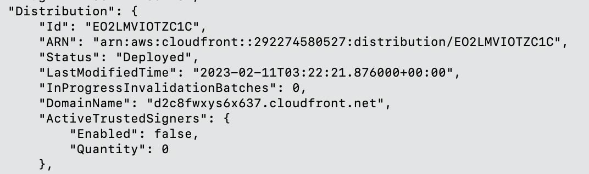
What just happened is that our site will now be retrieved from the closest edge location (the one with the lowest latency), instead of the region where we stored our bucket.
2. Update your DNS Record to route to the CloudFront end point and explain each step withgreat technical detail.
When we first tried to enter our doman “sarapekaloki.cetystijuana.com” we encountered an error and the site was not properly rendered. In class we applied a way of fixing this by updating certain parameters of our distribution. Since the teacher provided us with an already altered distribution we had to only change “TargetOriginId”, “DomainName”, “Id”, add an alias item, and update “CallerReferenceId”. All of these parameters pointed to jax’s website. However this json came with some extra parameters inside the “ViewerCertificate” key. This set of parameters inside the viewer certificate determine an “SSL/TLS” configuration for communicating with viewers. This type of certificate is an object that allows identification between networks, and then establishes encrypted connections with other systems using the SSL/TLS protocol which stands for Secure Sockets Layer / Transport Layer Security.
Aliases are alternate domain names or CNAMESs, which basically is a domain that points to another domain. Inside of this “alias” parameter we encountered other keys, “items” and “quantity”. Items is an array of domain names, and quantity is the number of aliases linked to the distribution.
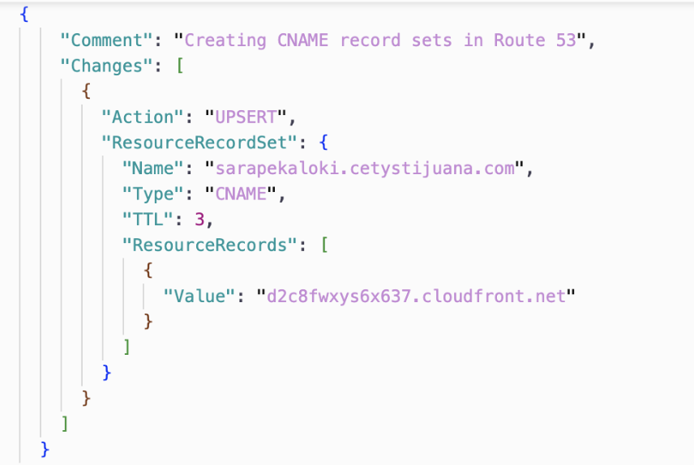
When we first tried to enter our doman “sarapekaloki.cetystijuana.com” we encountered an error and the site was not properly rendered. In class we applied a way of fixing this by updating certain parameters of our distribution. Since the teacher provided us with an already altered distribution we had to only change “TargetOriginId”, “DomainName”, “Id”, add an alias item, and update “CallerReferenceId”. All of these parameters pointed to jax’s website originally. However this JSON came with some extra parameters inside the “ViewerCertificate” key. This set of parameters inside the viewer certificate determine an “SSL/TLS” configuration for communicating with viewers. This type of certificate is an object that allows identification between networks, and then establishes encrypted connections with other systems using the SSL/TLS protocol which stands for Secure Sockets Layer / Transport Layer Security.
Aliases are alternate domain names or CNAMEs, which basically is a domain that points to another domain. Inside of this “aliases” parameter we encountered another 2 keys, “items” and “quantity”. Items is an array of domain names, and quantity is the number of aliases linked to the distribution.
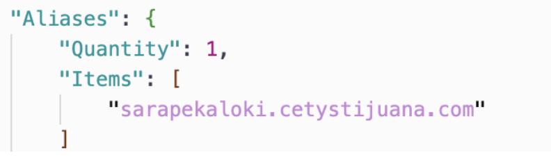
The “TargetOriginId” is the value id from where the distribution routes requests. This id is inside “DefaultCacheBehaviour” which describes how the distribution processes requests. By default the cache behavior will dictate the source from which the distribution retrieves objects. In this case we’ll set this value to our origin id, the default place where the cache should look for resources is our main server.
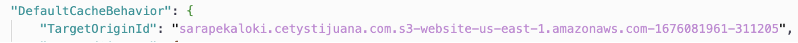
Next we’ll alter the “DomainName” and “Id” parameters. These are inside the data type “Origin'', quoting AWS’s documentation, an origin is the location where content is stored, and from which CloudFront goes and gets content to serve to the users. In this case we have “Origins” the plural version, and inside we have “Quantity” and “Items” which is an array that contains “Origin” objects.
The “Id” points to the s3 bucket url plus some digits concatenated at the end, since the value must be unique within the distribution. In the documentation it is stated that this value must be used inside the “DefaultCacheBehavior”.
Next our “DomainName” is pretty straightforward the domain name from the origin of our data which is our s3 bucket.
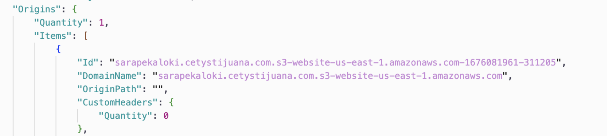
Lastly we ought to run two commands in order to get our “CallerReference” and “eTag” to update our distribution. These two commands are filtering the data returned from the “get-distribution” action; we had to pass on our distribution id with the flag --ig in order to get our distribution data.
aws cloudfront get-distribution --id EO2LMVIOTZC1C | grep Caller
aws cloudfront get-distribution --id EO2LMVIOTZC1C | grep ETag
Now that we have these values, we can update the “CallerReference” value on our new distribution JSON. This is a unique value, that it is used to prevent the capture and modification of your request (replay). This will make sure you don’t replicate requests.
In the JSON we’ll just put the value the previous command (“grep Caller”) returned.
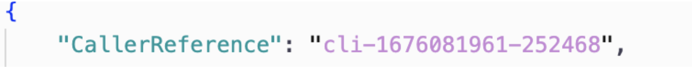
Lastly, to update our distribution we’ll need the eTag previously retrieved with the “grep eTag” command. In order to do this, we’ll use the “update-distribution” functionality, in which we’ll pass on our distribution id (we got this from blackboard, and can be retrieved using get-distribution), we’ll also pass on our new distribution file with “--distribution-config” and the path to our file. And lastly we’ll use our eTag with the “--if-match” option.
aws cloudfront update-distribution --id EO2LMVIOTZC1C --distribution-config file://jsons/distribution.json --if-match E30TB1OHB7EY3P
3. Explain what it means to minify website resources (html, js, css) and the advantages and disadvantages of this process
To minify website resources is a practice that reduces the size or memory that a web file such as (html, js, css) has. This is done by removing unnecessary things for the render, such as comments, white spaces, white lines, line breaks, making the variable names smaller, and the functions more compact. Everything that is redundant. So now instead of the browser loading your non-optimized code, it will load a lighter version of it. According to the bibliography, this practice can be done by another developer (an optimization developer). First the regular web developer creates the files needed for a web page. Then the optimization developer converts those files into a compressed version of themselves. Now the code will be really hard to read therefore hard to edit, so this new optimized code will be the final product to be deployed.
However, these practices are not usually done by an “optimization developer”, instead, you can use plugins and technologies that help you with the reduction of your code (you create a transpilation of your code just running a command). Once you build up your project (the transpilation, meaning the source code translated to another source code, in this case the same js, css or html but minified), you can go ahead and deploy the build.
Some of the advantages are that your website will improve its loading time, now the webpage will respond faster given that it has to process less code. Less resources, less complexity, less things to process. Since it reduces the memory of the file, this will keep the users from downloading unnecessary data. The user experience will also increase significantly since the loading time is faster, creating a better feel of the website, and making it more responsive. There will be a gain in performance. Minification is provided by some of the frameworks for web development such as Angular, since it is a regular practice for optimization. A Content Delivery Network such as CloudFront, provides automated minification, and saves you the work of having to deploy already optimized resources. In our case, we may deploy uncompressed files on our main server (s3 for example), and the CDN will distribute and store on the edge locations a minified version of the product.
Some of the disadvantages are that the minification technique can cause the code to break. If something it’s not working properly it will be hard to debug since it's not your own version of the code and it tends to be harder to read. In a real life situation I’ve encountered this specific problem. While developing E2Es tests for my code, I was trying to find a page object by its class, however the minification of the code removed this class. It was confusing to find the cause of the problem and I had to add additional code (an id to that element) to solve the problem (which is what minification tries to reduce).
4. Write a python script (and explain each step with great technical detail)
The first thing we ought to do is import the boto3 library into our script, this library allows us to use the API for AWS services.
 Now we need to create a client instance. Boto3.client(service), in this case will create the connection and allow us to use the functionality of the service. In this case, the argument service will point to “dynamodb”.
Now we need to create a client instance. Boto3.client(service), in this case will create the connection and allow us to use the functionality of the service. In this case, the argument service will point to “dynamodb”.
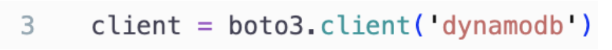
a. Create or update a record in the Students DynamoDB table based on the id
We can add a new item to the table using the put_item function. This receives two mandatory parameters which are TableName and Item, there is a denotation on the boto3 documentation about how we are to pass on these arguments. The syntax says that we need these functions only accept keyword arguments.The TableName argument is of type String, and in this case the value is ‘Students’. The value Item must follow other rules; first, it only accepts Dictionary type data, inside we must follow with the keys that match the dynamoDB table columns. The value of these keys will be the data inserted as the new item. These values must follow the format {‘Type’:’Data’}, where type can be S (string), N (number), B (bytes), among others; and data is whatever you want the value to be.
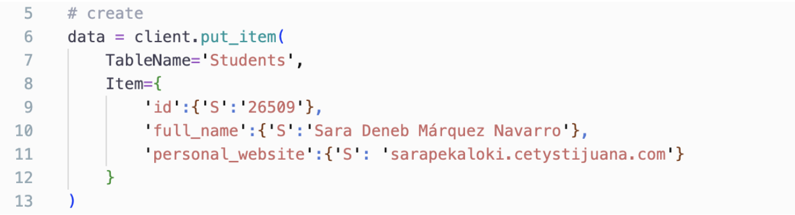
We can update an item using the update_item function. In this example we’ll be updating the full_name column. This one receives five mandatory parameters, which are TableName, Key, UpdateExpression, ExpressionAttributeNames and ExpressionAttributeValues. TableName as stated before equals ‘Students’. Now the Key argument receives a dictionary data type, in which we ought to pass on the primary key of the table; like the instructions of the questions stated, the primary key is the id of the student. The next argument is the UpdateExpression, this one has to be a string, and it this expression has to define the attribute to be updated #full_name, the action to be performed (set), and the new value (:p). #full_name and :p are references that will be defined on the following arguments.
ExpressionAttributeNames is of dictionary type, and it will define the reference of the attribute to be updated, in this case we defined that ‘#full_name’ points to the column ‘full_name’.
ExpressionAttributeValues is of dictionary type, and it will define the new value reference. As previously mentioned ‘:p’ was the name for the new entry. In this case, we’ll set our attribute to Sara Peka, using a string value.
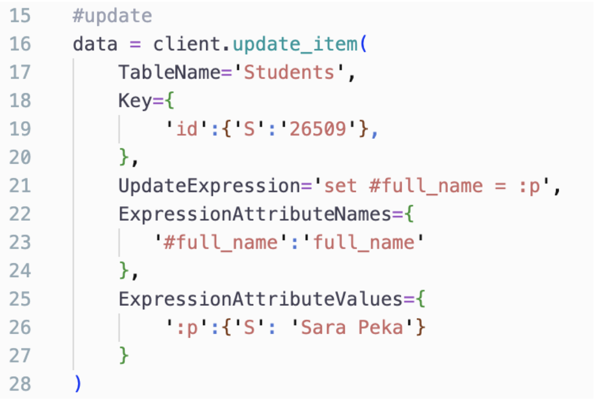
b. Delete a record in the Students DynamoDB table based on the id
We can delete an item with the delete_item function. This one receives two mandatory parameters, which are TableName and Key. TableName as stated before equals ‘Students’. The Key argument receives a dictionary data type, in which we ought to pass on the primary key of the table; like the instructions of the questions stated, the primary key is the id of the student.
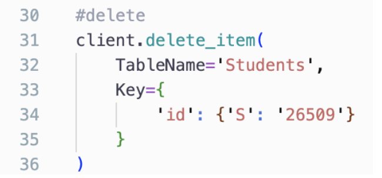
c. Find a record in the Students DynamoDB table by id
We can delete an item with the get_item function. This one receives two mandatory parameters, which are TableName and Key. TableName as stated before equals ‘Students’. The Key argument receives a dictionary data type, in which we ought to pass on the primary key of the table; like the instructions of the questions stated, the primary key is the id of the student. The response brings an item and consumed capacity information, the item has the corresponding data to the given key.
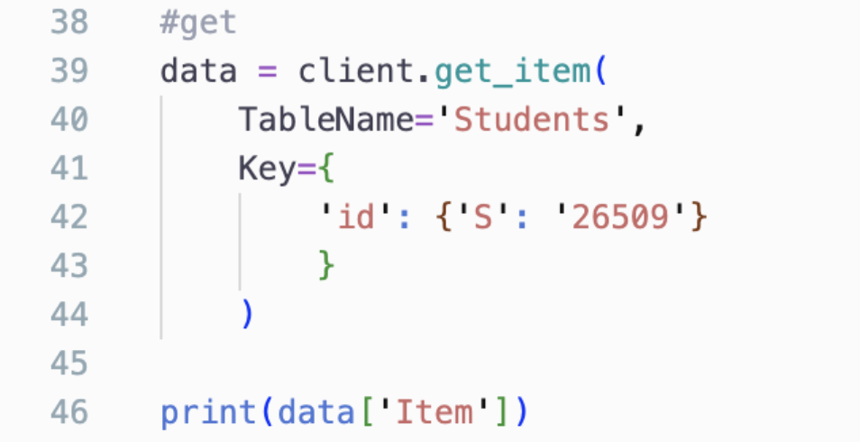
5. Explain the difference between Growth mindset and Fixed mindset according to CarolDweck
A person with a fixed mindset thinks that one is born with intelligence and
natural talent and that these do not develop over time, they are part of what you are.
The people with this kind of mindset tend to avoid challenges, give up easily, and are intimidated by other people's success. They also perceive feedback as an offense.
They also believe that putting effort into something is pointless and they tend to hide their
weaknesses. They have a desire to appear smart, but end up achieving
fewer things thanks to this mentality.
A person with a growth mindset sees intelligence and talent as skills that can be developed with effort and time. This mentality leads people to have a desire to learn and improve.They tend to accept challenges and be persistent. In addition, they see effort as
something positive that will lead them to be better; the people with this mentality learn from criticism and feedback. They like to learn and take inspiration from the success of other people. As a result these people are prone to achieve more and be successful. This mindset gives people a great sense of self-control; if they put their minds to it, they can achieve anything.
In pop culture we may find characters that resemble these mindsets, such as Rory and Paris from Gilmore Girls; as a teenager, Rory was always told how smart and perfect everything she did was, later on we found out that she is unemployed, and can’t seem to land a job given her lack of effort and ambition. On the other hand, Paris was always an overachiever, her parents expected a better performance and they did not praise her for everything she did. Consequently, she ended up with multiple degrees, and a successful career. She didn’t get stuck, she advanced and improved herself.